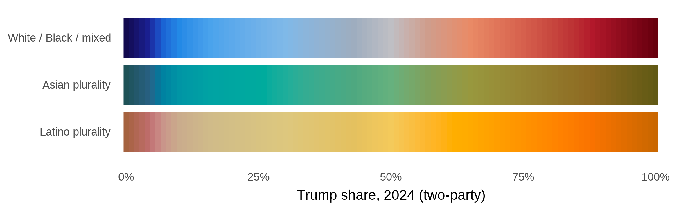

The color scheme
Every bloc in every place is colored by one rule, with the intent that a color means the same sort of bloc wherever it appears. Given the diversity present across the US that’s always going to be a rough statement but the presented color scheme attempts a compromise in that direction.
The largest axis is red to blue, which communicates the overall partisan alignment, so a blue district in Washington should vote similarly on a national scale to a similar color in Georgia. In a similar fashion, a gold bloc in Phoenix and a gold bloc in Miami are both Latino-plurality blocs that split about evenly. While there are exceptions, in general, similar colors should mean similar voting patterns, at least at the national level.
The color scheme is built out of three-axes. The first is the overall national partisanship, for which we use Trump 2024 share as a starting point, and runs from red (100%) to blue (0%). This axis is largely a rural/urban divide, though it also encompasses largely white and Black communities, with the racial mixture running along the broader partisan gradient. Then we do similarly with Latino and Asian-predominant areas, which turn out to have distinguishable politics.
Here are the specific details (Claude-generated):

The vote: blue to red
The starting point is each bloc’s share of the two-party vote for Trump in 2024: Trump’s votes divided by Trump’s and Harris’s together. A bloc at 0% would be deep blue, a bloc at 100% deep red, and an even split mid grey.
The blocs don’t spread evenly over that range. They run from about 5% to about 92% Trump, but half of them sit below 36%, and most city blocs fall between 5% and 20%. An evenly spaced ramp would paint nearly every urban bloc the same blue. So the blue half is stretched where the blocs crowd together: the ramp passes from indigo at 4% to bright azure at 10% and only reaches pale sky blue around 30%. Small differences among very Democratic neighborhoods stay visible.
The middle of the ramp is a mid grey, reached through slate blue on one side and dusty rose on the other, rather than white. A white midpoint would make the most evenly split blocs vanish into the page and into the pale grey of places the atlas doesn’t cover. With the grey midpoint they still stand apart from both.
Asian- and Latino-plurality blocs
A bloc’s plurality is the largest of four groups among its residents: white, Black, Asian and Latino. When that group is Asian or Latino, the bloc’s blue-to-red color is mixed halfway toward a group color, green for Asian and yellow for Latino, and then made more vivid.
The mixing happens in CIELAB, a color space built so that equal distances look like roughly equal differences to the eye. Mixing there keeps each bloc’s left-to-right position readable. Latino-plurality blocs run from sand through gold to orange as the Trump share rises, and Asian-plurality blocs from teal through green to olive. A dark teal bloc and a deep blue bloc both voted heavily Democratic; one is Asian-plurality and the other isn’t.
White-, Black- and mixed-plurality blocs share the plain blue-to-red ramp. Across the atlas there are a few dozen Latino-plurality blocs and seven Asian-plurality ones; every other bloc is on the top ramp.
Five ethnically specific blocs
In a handful of places the model finds a bloc defined less by its vote than by a particular community. These blocs take their own colors, browns and oranges, plus one lime. Each was chosen by a random search to sit clearly apart from every color on the three ramps and from the others.
- Hasidic and Orthodox Brooklyn
New York City · 87% Trump - Cuban-Americans
Florida and South Florida · 70% Trump - East African and Southeast Asian immigrant neighborhoods
Minneapolis–St. Paul, two blocs · 22–26% Trump - Native nations
New Mexico · 15% Trump - Franco-Americans (New France)
Maine · 57% Trump
These colors don’t vary much with the vote: they are 85% the group’s own color, so a bloc’s identity comes through first. Read the vote share from the bloc list beside each place’s map. New Mexico’s and Maine’s blocs keep the brown and lime from the atlas’s earlier race-and-rurality scheme.
Exceptions
- Chicago, Salt Lake City and Utah are colored by the Trump share in 2020, since that is the most recent presidential race in their data.
- Utah’s five lighter-red blocs, between about 53% and 76% Trump, keep pinks from the atlas’s earlier race-and-rurality scheme.
- Cities inside a covered state, such as Denver, Boston, Seattle and Atlanta, show their state’s blocs, cut to the city, in the state’s colors.
The high-contrast scheme
Because the national scheme is about comparing places, blocs within one place can look alike: Philadelphia’s most Democratic blocs, for instance, are all shades of blue. The High-contrast color scheme button beside each place’s name gives every bloc there a clearly different color instead, from a palette of twenty distinct colors after Kelly’s colors of maximum contrast. The colors are assigned so that blocs that touch on the map, or sit close together in the PCA, get the most different ones.
Up to twenty blocs, every bloc has its own color. San Diego and California have more, so some colors repeat, but never between neighboring blocs. These colors carry no meaning of their own and aren’t comparable from place to place. The US map always uses the national scheme, and each place opens in it; your choice stays in effect as you move between places.
Reading the colors
- Color is about a bloc, not a precinct. Every precinct or town in a bloc takes the bloc’s color, which reflects the bloc’s combined vote and makeup. A single precinct can differ from its bloc.
- Names and numbers are each place’s own. Blocs are numbered within each place, from most Democratic to most Republican. “Bloc 3” in Columbus has nothing to do with “Bloc 3” in Dallas, but two blocs of the same color voted alike.
- The listed vote can differ slightly. The share printed under each bloc’s name in a place’s panel comes from that place’s own data, which for some places is the 2020 race. It can differ a little from the 2024 share that sets the color.
- Plurality is a coarse cut. A bloc that is 35% Latino and 34% white is colored as Latino-plurality. The demographic panels under each place’s PCA show the full picture.
- Color doesn’t show certainty. How firmly a precinct belongs to its bloc isn’t encoded in the color.